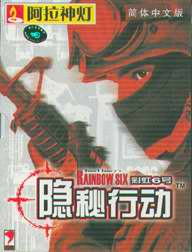

隐秘行动
发行公司：UBI
开发公司：Red Storm Entertainment游戏类型：FPS
发布日期：2001年12月
对应平台： PC
彩《彩虹六号：重点隐秘军事行动》（TomClancy'sRainbowSix:CovertOpsEssentials）仍然是一款高拟真度的第一人称视角动作游戏。
在游戏中，玩家将指挥一支精锐的反恐怖特种部队同各类穷凶极恶的国际恐怖份子展开你死我活的斗争。由于反恐怖行动的特殊性，在游戏中玩家必须让自己的部下在行动中遵循“一弹一杀”（OneShootOneKill）的原则，这样才能以最小的代价完成最艰难的任务，否则恐怕每次行动都会有队员去见上帝。也正因为这样，在游戏过程中玩家必须随时处于高度紧张的状态之中，用你的耳朵去聆听哪怕是非常轻微的响动并敏锐地作出正确的判断，因此玩家很可能觉得自己并不是仅仅在玩一个游戏而是有真正置身与那危机四伏的环境之中的感觉。
